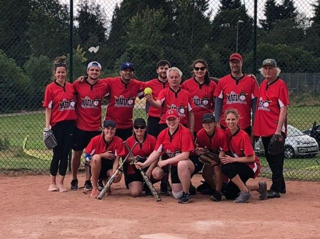
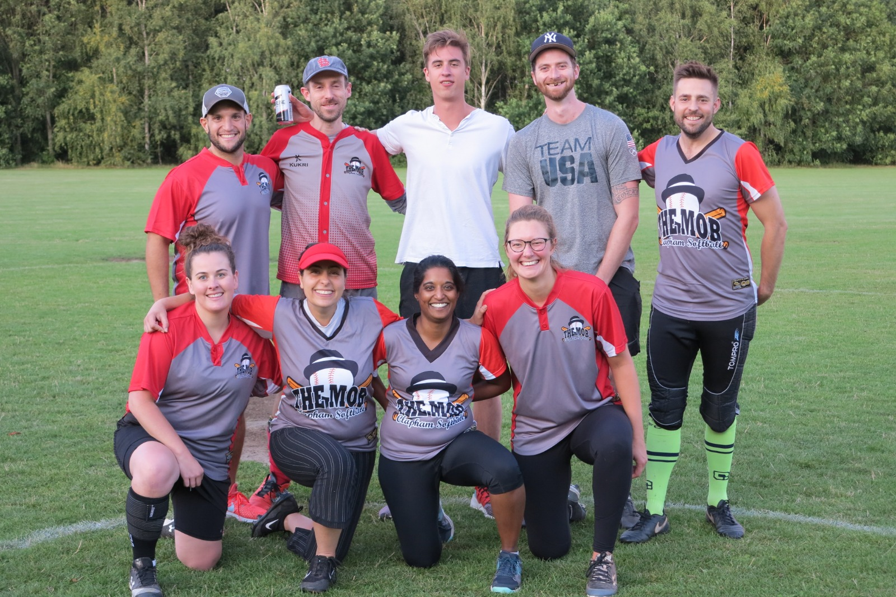
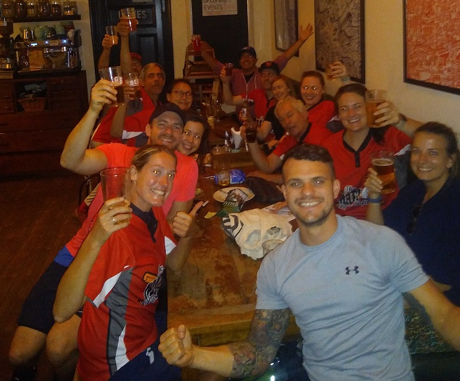

We are a fun, friendly, mixed softball club, playing in 2020 in the London Softball League Majors Division 2 (The Mob) and Minors Division 4 (The Mafia).
The outdoor league season runs from April/May to August on weeknights, with various tournaments at weekends between April and September. We practice every Sunday on Wandsworth Common (John Archer Way) during the league season.
Fees for the season are £75 and these include all league matches and training. If joining halfway through the season it is £40, and later than that would be £5 per game. Tournaments have a separate cost of £15 per day.
We would welcome new players regardless of experience. Please feel free to get in contact via email if you are interested in playing for us.
You can find out more about what we get up to in the season on our instagram feed claphamsoftball.
The outdoor league season runs from April/May to August on weeknights, with various tournaments at weekends between April and September. We practice every Sunday on Wandsworth Common (John Archer Way) during the league season.
Fees for the season are £75 and these include all league matches and training. If joining halfway through the season it is £40, and later than that would be £5 per game. Tournaments have a separate cost of £15 per day.
We would welcome new players regardless of experience. Please feel free to get in contact via email if you are interested in playing for us.
You can find out more about what we get up to in the season on our instagram feed claphamsoftball.


